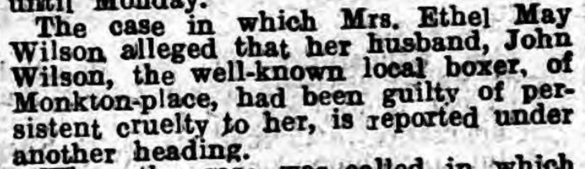
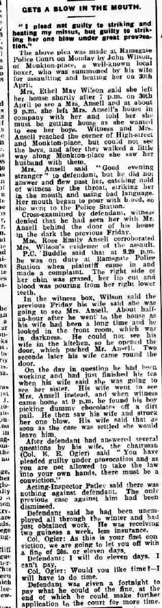
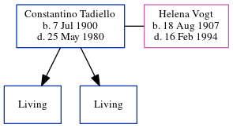

Ethel May Wilson (née Lawrence) 1900 - c1979
[ Home ] | [ Calendar ] | [ Surnames Index ] | [ Census Index ] | [ Family History ]The child of James Lawrence (an agricultural laborer) and Mary Baker, Ethel Lawrence, the great-aunt of Nigel Horne, was born in Cliffsend, Ramsgate, Kent, England on Nov 22, 19001,2,3,4, was baptized in Staple, Kent, England on Oct 20, 1901. She married John Wilson (with whom she had 1 surviving child, Ronald E) in Thanet, Kent, England around Aug 19205.
During her life, she was living in Staple on Mar 31, 19017; and at 2 Oast Cottage, Cleve, Monkton, Kent on Apr 2, 19116.
She died c. May 1979 in Thanet3.
Parents
- James was born on Jul 29, 1863
- Mary Ann Elizabeth
Citations
- 1901 England Census Online publication - Provo, UT, USA: The Generations Network, Inc., 2005.Original data - Census Returns of England and Wales, 1901. Kew, Surrey, England: The National Archives of the UK (TNA): Public Record Office (PRO), 1901. Data imaged from the National
- 1911 England Census Online publication - Provo, UT, USA: Ancestry.com Operations, Inc., 2011.Original data - Census Returns of England and Wales, 1911. Kew, Surrey, England: The National Archives of the UK (TNA), 1911. Data imaged from the National Archives, London, England.
- England & Wales deaths 1837-2007 - Findmypast
- England & Wales, FreeBMD Birth Index, 1837-1915 Online publication - Provo, UT, USA: The Generations Network, Inc., 2006.Original data - General Register Office. England and Wales Civil Registration Indexes. London, England: General Register Office. © Crown copyright. Published by permission of the Cont
- England & Wales marriages 1837-2008 - Findmypast
- 1911 Census for England & Wales - Findmypast (was age 10 and the daughter of the head of the household)
- 1901 England, Wales & Scotland Census - Findmypast (was age 0 and the daughter of the head of the household)
Media
Thanet Advertiser 12 February 1932

Thanet Advertiser - 12 May 1933

England & Wales marriages 1837-2008 - BMD/M/1920/3/AZ/000924/127
England & Wales deaths 1837-2007 - BMD/D/1979/2/AZ/001224/061
England & Wales births 1837-2006 - BMD/B/1900/4/AZ/000337/205
1901 England, Wales & Scotland Census - GBC/1901/0006672244
Kent Baptisms - GBPRS/CANT/BAP/031081
Family Tree
Generated by ged2site. Last updated on Jun 11, 2024